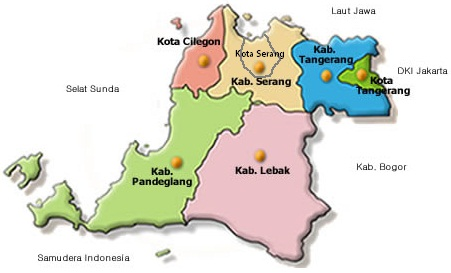
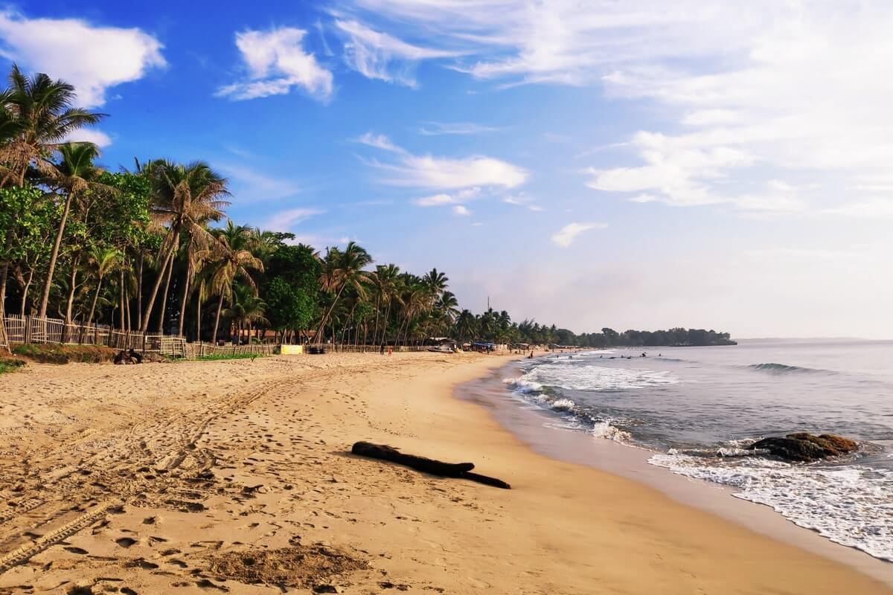
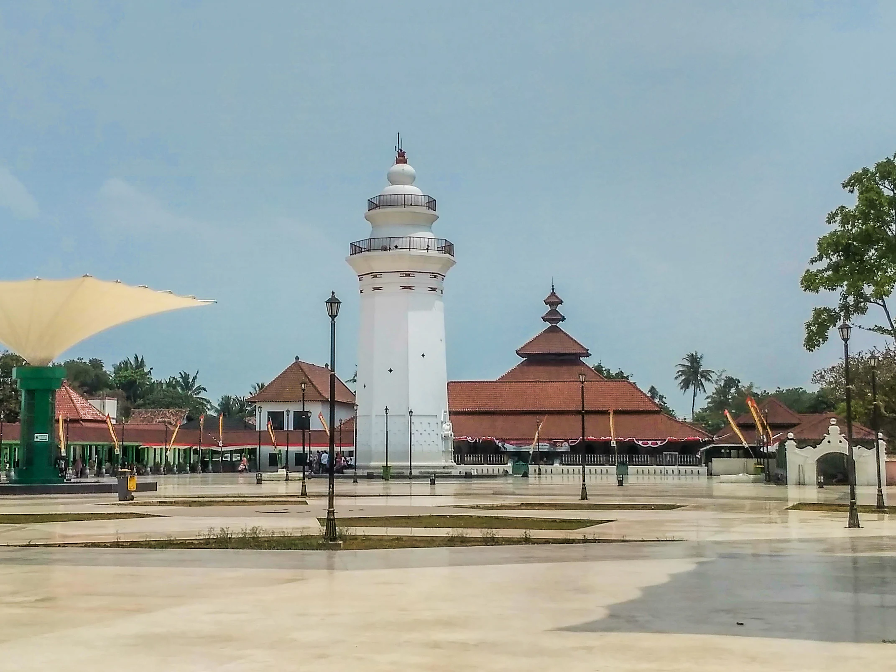

Sejarah Banten
.jpg)
Banten atau dahulu dikenal dengan nama Bantam pada masa lalu merupakan sebuah daerah dengan kota
pelabuhan yang sangat ramai, serta dengan masyarakat yang terbuka dan makmur. Banten pada abad ke-5
merupakan bagian dari Kerajaan Tarumanagara. Salah satu prasasti peninggalan Kerajaan Tarumanagara
adalah Prasasti Cidanghiyang atau prasasti Lebak, yang ditemukan di Kampung Lebak di tepi Ci
Danghiyang, Kecamatan Munjul, Pandeglang, Banten. Prasasti ini baru ditemukan tahun 1947, dan berisi
2 baris kalimat berbentuk puisi dengan huruf Pallawa dan bahasa Sanskerta. Isi prasasti tersebut
mengagungkan keberanian Raja Purnawarman. Setelah runtuhnya Kerajaan Tarumanagara (menurut beberapa
sejarawan ini akibat serangan Kerajaan Sriwijaya), kekuasaan di bagian barat Pulau Jawa dari Ujung
Kulon sampai Ci Sarayu dan Ci Pamali dilanjutkan oleh Kerajaan Sunda. Seperti dinyatakan oleh Tome
Pires, penjelajah Portugis pada tahun 1513, Bantam menjadi salah satu pelabuhan penting dari
Kerajaan Sunda. Menurut sumber Portugis tersebut, Bantam adalah salah satu pelabuhan kerajaan itu
selain pelabuhan Pontang, Cigede, Tamgara (Tangerang), Kalapa, dan Cimanuk.
Banten adalah sebuah provinsi di Pulau Jawa, Indonesia. Provinsi ini beribu kota di Kota Serang.
Provinsi ini merupakan provinsi yang paling barat di Pulau Jawa. Provinsi ini sebelumnya pernah
menjadi bagian dari Provinsi Jawa Barat, tetapi provinsi ini menjadi wilayah pemekaran sejak tahun
2000, dengan keputusan Undang-Undang Nomor 23 Tahun 2000. Suku aslinya adalah suku Sunda Banten yang
berada di wilayah Kabupaten Serang bagian selatan, Kabupaten Pandeglang, Kabupaten Lebak, serta
sebagian besar Kabupaten Tangerang, dan komunitas masyarakat adat yakni suku Badui yang mendiami
wilayah Gunung Kendeng dan Leuwidamar di Kabupaten Lebak.
Peta Provinsi Banten

Kota Serang adalah wilayah baru hasil pemekaran, Kab Serang Provinsi Banten. Sebagai ibukota
provinsi, kehadirannya adalah sebuah konsekuensi logis dari keberadaan Provinsi Banten. Terdiri dari
5 (enam) kecamatan yaitu; Kecamatan Serang, Kecamatan Kasemen, Kecamatan Walantaka, Kecamatan Curug,
Kecamatan Cipocokjaya dan Kecamatan Taktakan, Kota Serang memiliki luas wilayah 266,77 km’ dengan
jumlah penduduk sekitar 523.384jiwa dan Batas wilayah. Sebelah Utara yaitu Teluk Bantery Sebelah
Timur yaitu Kec. Pontang, Kec. Ciruas dan Kec. Kragilan Kab. Serang, Sebelah Selatan yaitu Kec.
Cikeusal, Kec. Petir dan Kec. Baros Kab. Serang, serta Sebelah Barat yaitu Kec. Pabuaran, Kec.
Waringin Kurung dan Kec. Kramatwatu Kab.
Serang. Dari 6 (enam) kecamatan tersebut terdiri dari 20 Kelurahan dan46 Desa. Kota ini diresmikan
pada tanggal 2 November 2007 berdasarkan UU Nomor 32 Tahun 2007 tentang Pembentukan Kota Serang,
setelah sebelumnya RUU Kota Serang disahkan pada 17 Juli2007 kemudian dimasukan dalam lembaran
Negara Nomor 98 Tahun 2007 dan tambahan lembaran Negara Nomor 4748, tertanegal 10 Agustus 2007.
Sebelumnya, Pemerintah Provinsi (Pemprov) Banten dalam mempercepat terwujudnya Pemerintahan Kota
Serang telah mempersiapkan empat kelompok kerja (Pokja) yang akan bekerja sebelum ditetapkannya
Penjabat Walikota Serang. Keempat pokja tersebut terdiri dari Pokja Personil, Pokja Keuangarg Pokja
Perlengkapanya dan Pokja Partai Politik.
Pantai Anyer

Pantai Anyer adalah destinasi wisata eksotis di Banten, surga dekat dari Cianjur. Pasir putih
yang bersih dan panorama laut yang menakjubkan menjadikan Pantai Anyer menjadi salah satu daya
tarik wisata yang sangat populer.Pantai Anyer merupakan titik awal jalur Pantai Selatan di Pulau
Jawa yang berlokasi di Kecamatan Anyer, Banten. Pulau Anyer dikenal karena hamparan pasir
putihnya yang cocok untuk tempat wisata.
Masjid Agung Banten

Masjid Agung Banten didirikan pada 1566 M ketika Maulana Hasanuddin menjabat sebagai Sultan
Banten pertama pada 1552-1570. Inilah warisan kesultanan Banten yang masih berdiri kokoh hingga
sekarang. Sebagaimana masjid-masjid lain di Nusantara, Masjid Agung Banten berdenah segi empat
dengan rancang bangun yang unik. Arsitekturnya merupakan perpaduan antara arsitektur Jawa, Cina,
dan Eropa.
Ini dikarenakan pembangunannya melibatkan tiga arsitek dari negeri yang berbeda. Raden Sepat
merupakan arsitek utama berasal dari Majapahit yang juga menukangi Masjid Cirebon; Tjek Ban Tjut
arsitek asal Cina; dan Hendrik Lucaz Cardeel asal Belanda. Atas jasa-jasa mereka menegakkan
simbol kebesaran Islam itu, Tjek Ban Tjut dianugerahi gelar bangsawan dari kesultanan dengan
nama Pangeran Adiguna.